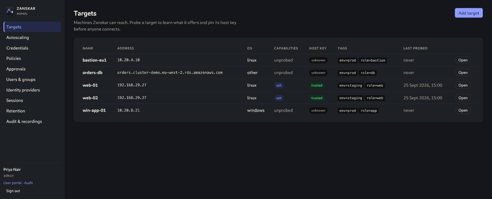

Terminals
SSH to Linux and PowerShell over WinRM to Windows, streamed to the browser over WebSocket and recorded as asciicast. Full-screen toggle, live resize.
AGENTLESS ACCESS GATEWAY
Browser sessions to the machines you already run. Nothing to install on them.

ONE GATEWAY, EVERY PROTOCOL
Users sign in once to Zanskar and open sessions in the browser. Zanskar authenticates to each target with a vaulted credential the user never sees, records the session, and writes every step to a hash-chained audit log. Targets need no agent and no inbound internet exposure.
WHAT YOU GET IN 1.0
SSH to Linux and PowerShell over WinRM to Windows, streamed to the browser over WebSocket and recorded as asciicast. Full-screen toggle, live resize.
RDP and VNC through a guacd sidecar, with session recording and live shadowing by auditors. Clipboard and drive redirection are policy switches.
A psql session to PostgreSQL, Amazon RDS or self-managed, through an ephemeral per-session client container. The database credential lives in a proxy sidecar and never reaches the user's client, not even from a shell escape.
SFTP upload and download beside the SSH terminal, drive redirection for RDP, each gated per policy and audited with path and size, never recorded.
A policy can grant eligibility instead of standing access. Users request a target with a reason and a duration, an admin approves or denies, and the grant expires on its own.
Enroll an AWS Auto Scaling group through a cross-account IAM role. Zanskar tracks the healthy pool, uses EC2 Instance Connect credentials, and offers failover when your instance goes away.
Local accounts with Argon2id and mandatory TOTP, or OIDC and LDAP/Active Directory sign-in with audited group-to-role mapping. Three roles: admin, auditor, user.
Vaulted passwords, SSH keys and an SSH certificate-authority mode, sealed with envelope encryption under a versioned master key. Host keys and TLS certificates are pinned at enrollment and any change blocks connections.
Every session is recorded, every recording view is itself audited. The audit log is hash-chained with a verify command and streams to a SIEM over syslog/CEF or a signed webhook.
One static binary with the web UI embedded. zanskar init writes the configuration, backup and restore snapshot the database and recordings, retention sweeps old recordings by age and size.

HOW IT IS BUILT
Zanskar is designed for compliance-driven environments: least standing privilege, separated authentication, and evidence for everything.
Read the threat model and the architecture decision records.
START ON ONE SERVER
zanskar init.Signed deb/rpm packages for amd64 and arm64, or a signed container image with Docker Compose.